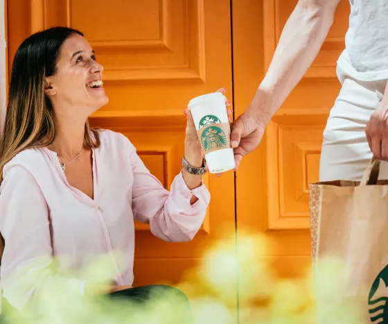

Pumpkin spice is terug!
De blaadjes beginnen te vallen en de zon neemt langzaam af, wat alleen maar kan betekenen: de herfst gaat beginnen! Dit seizoen is onze favoriet, de Pumpkin Spice Latte, terug met een nieuw vriendje: de Pumpkin Cream Cold Brew üçÇ Limited edition en exclusief bij Starbucks. Bestel nu direct aan je deur via Uber Eats of Thuisbezorgd.
Jouw favorieten bezorgd aan huis!
Starbucks Delivers
Mis dit voorjaar nooit meer een drankje met Starbucks® Bezorgd. Geniet van al je favorieten aan en knus op je bank terwijl je je favoriete serie bingewatcht. We bezorgen tot aan je deur, zodat je kunt genieten van je Iced Latte of Caramel Frappuccino in de comfort van je eigen huis.
Bestel nu
Starbucks Verhalen
Blijf op de hoogte van onze laatste Starbucks verhalen en nieuws.
Ontdek meer
Over ons
Ontdek meer over ons bedrijf en geschiedenis.
Ontdek meer
Starbucks® Bezorgd
Genieten van je favoriete Starbucks® drankjes vanuit het comfort van je huis is dichterbij dan je zou denken. Het is de koffie die je kent en waar je van houdt, in je favoriete mok. Kijk of bezorging bij jou in de buurt mogelijk is. Start je bestelling om je Starbucks® favorieten te laten bezorgen via Uber Eats en Thuisbezorgd.
Bestel nu